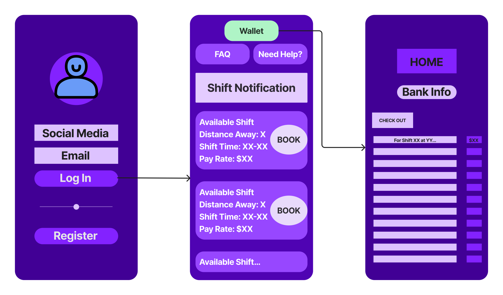

For this particular analysis, let's discuss an actual challenge faced by an actual organization. This organization (which shall be referred to as SF - Staffing Firm) collaborates with healthcare facilities (HCF) to provide shifts on their app, which may be reserved by healthcare professionals (HCP) who take the shifts at the contracted rate. SF is compensated by HCFs with 20% of the rate that is given to the HCP. The wireframe shown above demonstrates how this app operates from the perspective of HCPs.
In this study, SF encountered difficulties where HCPs would either cancel the shift last minute or become a no-call, no-show. The latter of which was noticeable as it had a direct impact on the churn rate of HCFs, the rate at which HCFs stopped utilizing the services of SF. The SF had already attempted to implement a solution to this issue - an attendance policy that punished those who had late cancellations or were no-call, no-shows. However, this issue did not fix the matter and SF still faced regular cancellations.
My analysis performed here offers a solution for this issue via an overfilling function, where multiple HCPs are assigned to specific shift groups. For the purposes of not completely filling this webpage with pages of text, I am instead providing this analysis as a PDF below.